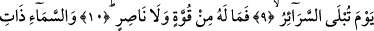
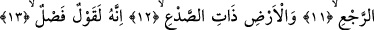
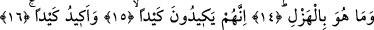
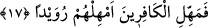

KUR’AN HAK İLE
BÂTILI AYIRAN
BİR SÖZDÜR
9. Bütün sırların ortaya döküldüğü günde
10. İnsan için ne bir güç ne de bir yardımcı vardır.
11. Dönüş sâhibi olan (yağmur yağdıran) göğe,
12. (Nebat ile) yarılan yere yemin ederim ki
13. Kur’an, (hak ile bâtılı) ayıran bir sözdür.
14. O, asla bir şaka değildir.
15. Onlar bir tuzak kurarlar,
16. Ben de bir tuzak kurarım.
17. Kâfirlere mühlet ver, onları biraz kendi hallerine bırak (pek yakında
desteğimiz sana gelecek).
“Bütün sırların ortaya döküldüğü günde” Bu ifâde yukarda geçen “rac’ıhi/onu
öldükten sonra diriltmeye” ifâdesinin zaman zarfıdır. Yukardaki ifâdeyle bu zarfın
arasına başka kelimelerin girmiş olması ifâdeye dilbilgisi açısından herhangi bir zarar
ve eksiklik getirmez. Çünkü zarf konusunda kurallar geniş tutulmuştur.
Âyette yer alan; “es-serair” seriyre kelimesinin çoğulu olup, mânâsı sırlar demektir.
Sır -bilindiği üzere- gizlenen, başkalarına ifâde edilmeyen şey demektir. Buna göre
âyetin mânâsı şöyle olur: Kalplerde gizlenen inanç ve niyetler vb. şeyler ortaya dökülüp
bilindiği gün. Ayrıca gizlenen ameller ortaya dökülüp iyisiyle kötüsü ayrıldığı gün.
Başka bir ifâdeyle sırların âşikâr olacağı gün, temiz olanlar pis olanlardan ayrılsın
diye gizli yapılan amelleri ortaya çıkarır.
Amellerimiz üzerinden perde kaldırılsa
İki âlemde de rüsvâ olmayacak kim vardır?
Âyetteki ‘tublâ’ fiilinin masdarı olan “iblâ” denemek ve imtihan etmek anlamındadır.
Denemek ve imtihan etmek fiilinin, ortaya dökmek, açmak, birbirinden ayırmak
anlamına gelen bir kelime ile ifâde edilmesi sebebin ortaya çıkışa isim olarak verilmesi